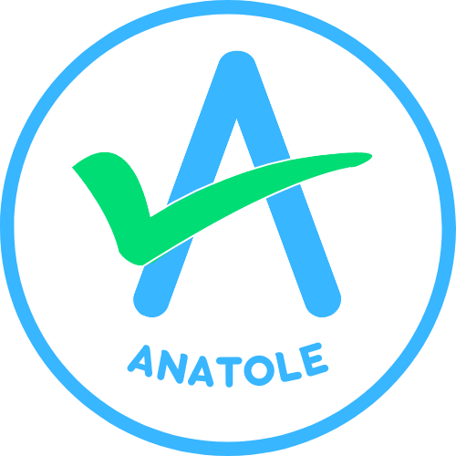
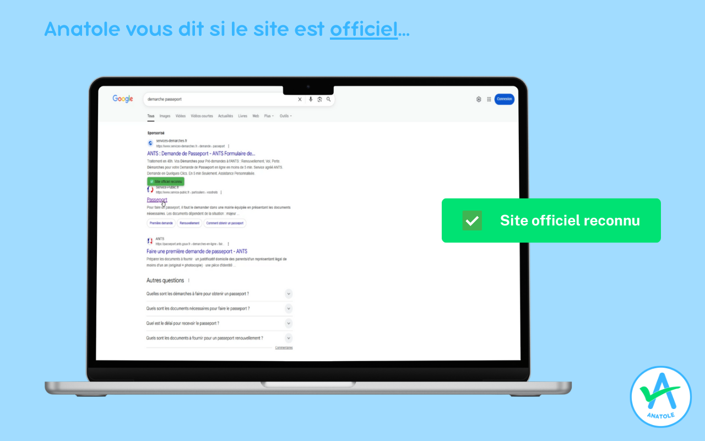

De nombreux sites non officiels vous proposent de réaliser vos démarches en votre nom, moyennant des frais élevés et injustifiés. Anatole vous aide à distinguer les sites officiels, simplement et rapidement, et vous sécurise dans vos démarches en ligne.
Anatole est une extension de navigateur conçue pour vous aider à distinguer les sites officiels des sites tiers lors de vos démarches administratives en ligne. Lorsque vous survolez un lien dans la page de résultats de Google, Anatole affiche une icône à côté du lien pour indiquer si le site est officiel ou s'il est susceptible de vous facturer des frais supplémentaires.
